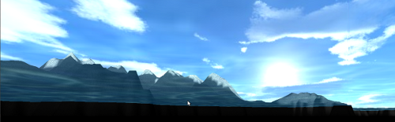
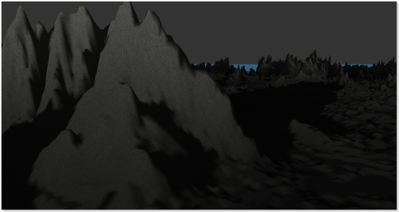
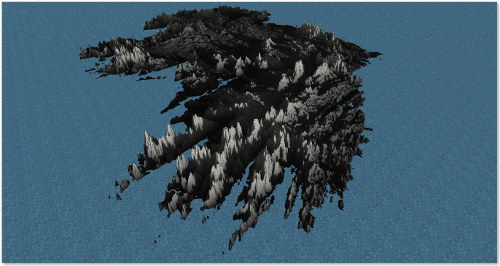

La cartographie de demain !
AutoMap est un logiciel de cartographie 3D intuitif, puissant et multiplateforme ! Grâce à AutoMap vous pourrez très aisément convertir vos relevés topologiques en une magnifique représentation tridimensionnelle.
AutoMap a été codé en Objective Caml et utilise les bibliothèques glMLite, LablGTK et OcamlSDL pour fonctionner.
AutoMap a été réalisé dans le cadre du projet du 1er semestre de deuxième année à l'EPITA.
Samedi 10 Décembre 2011 à 1:46,
SkyBox et plan d'eau animé
Nous avons rajouté une skybox aussi simplement que de rajouter un cube texturé non influencé par la lumière !
Par ailleurs, le plan d'eau est maintenant animé ! Un peu plus de perturbation dans ce monde figé ne faisait pas de mal :D
Mercredi 7 Décembre 2011 à 10:28,
En avant avec les Detail Map ainsi qu'un plan d'eau !
Nous avons été obligé de modifier légèrement glMLite pour rajouter la fonction glClientActiveTexture, sans ça, le multi-texturing avec les VBO aurait été impossible ! Heureusement que ce genre de binding consiste simplement à lister les équivalents des fonctions entre le C et OCaml :D
 Mardi 6 Décembre 2011 à 22:39,
{kind=link}
{kind=link}
{kind=link}
{kind=link}
{kind=link}